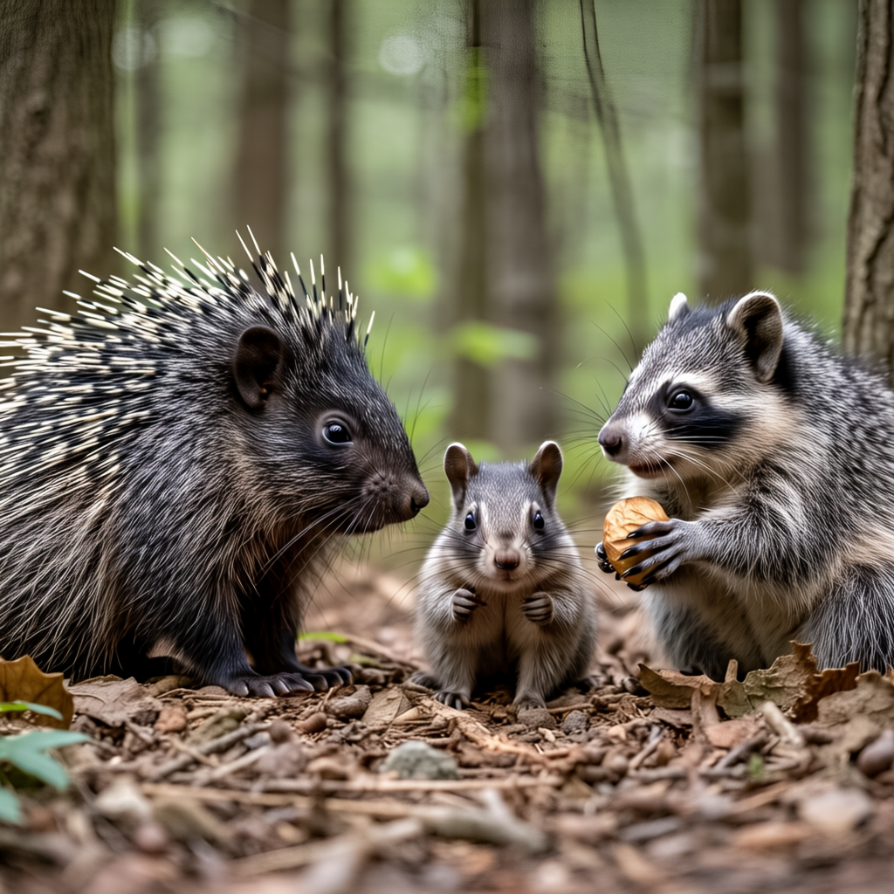

Inst ance Gen
Image Generation with Instance-level Instructions
SIGGRAPH 2025
TL;DR: We introduce an inference time technique which improves diffusion model's ability to generate images for
complex prompts involving
* The input to our method is only a text prompt (the words are colored just for illustration purposes!)
Abstract
Despite rapid advancements in the capabilities of generative models, pretrained text-to-image models still struggle in capturing the semantics conveyed by complex prompts that compound multiple objects and instance-level attributes. Consequently, we are witnessing growing interests in integrating additional structural constraints, typically in the form of coarse bounding boxes, to better guide the generation process in such challenging cases. In this work, we take the idea of structural guidance a step further by making the observation that contemporary image generation models can directly provide a plausible fine-grained structural initialization. We propose a technique that couples this image-based structural guidance with LLM-based instance-level instructions, yielding output images that adhere to all parts of the text prompt, including object counts, instance-level attributes, and spatial relations between instances. Additionally, we contribute CompoundPrompts, a benchmark composed of complex prompts with three difficulty levels in which object instances are progressively compounded with attribute descriptions and spatial relations. Extensive experiments demonstrate that our method significantly surpasses the performance of prior models, particularly over complex multi-object and multi-attribute use cases.
Sample Results
|  |

|
|
We showcase sample results generated by our method. Results are also displayed along with the initial diffusion model input which acts as a starting point for our method. We also show our "instance assignments" which are derived from the initial  image and guide the generation of the output image.
How does it work?
üåç Given a baseline diffusion model, we start by generating an initial (likely incorrect) image while saving cross attention maps and noisy latent codes for downstream tasks.
üí° We then use the initial image along with the cross attention maps to produce an instance segmentation map, which maps all object instances in the original image.
The segmentation map and cross attention maps are then summerized in a json format file which details where each object instance is located, how much area it covers,
and how likely it is to represent each word in the text prompt.
üîç The instance layout summary is then given to an LLM, which is tasked with producing a set of "Instance Instructions". These instructions define what each instance region
will represent in the output image - either one of the objects defined in the text prompt or the background. We instruct the LLM to produce instance instructions that result in
a layout which is both technically correct and aligns with the initial image as best as possible.
üìã The instance instructions are used to guide our "Assignment Conditioned Image Generation" stage, in which we use a set of losses and attention manipulation components to produce
an image which accurately represents the instance layout and instructions while maintaining the visual quality of the initial image.
Benchmark
We introduce CompoundPrompts - a new benchmark for evaluating text-to-image model's ability to generate images which accurately depict complex multi-object prompts.
CompoundPrompts is made up of 60 unique prompts, each with nine variants defined by three difficulty tiers (A, B, C) and three "total object count" versions (1, 2, 3).
Choose an example, a difficulty tier and an object count version to sample a CompoundPrompts prompt and its InstanceGen result.
Title will appear here |
||||||
Example |

|
|||||
Difficulty Tier |
||||||
Object count Tier |
||||||
BibTeX
@misc{---,
---
---
---
---
---
---
}
Acknowledgements
We thank Filippos Kokkinos, Eric-Tuan Le and Andrea Vedaldi for their helpful feedback throughout the development of this work.